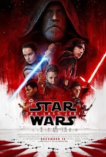

A New Hope (1977)
Star Wars: A New Hope is where it all began, and it still holds up as a classic. The story is simple but effective, introducing
Luke Skywalker as he discovers his destiny. I love how it builds an entire universe while keeping the focus on adventure, hope,
and the battle between good and evil.

The Empire Strikes Back (1980)
The Empire Strikes Back is often called the best Star Wars movie, and I completely agree. The darker tone, the intense battles, and the
shocking reveal about Vader make it unforgettable. I also love Yoda’s introduction and Luke’s training, which add so much depth to
the story.

Return of the Jedi (1983)
Return of the Jedi brings everything to an emotional and action-packed conclusion. I really enjoy the final battle, both in space
and on the ground, as well as Luke’s last confrontation with Vader. Seeing Anakin’s redemption is one of the best moments in
the entire saga.

The Phantom Menace (1999)
The Phantom Menace gets a lot of criticism, but I think it has some really great moments. The podracing scene is exciting, and
Darth Maul is one of the coolest Star Wars villains ever. Plus, the Duel of the Fates fight with Qui-Gon and Obi-Wan is one of
my favorites in the entire series.

Attack of the Clones (2002)
Attack of the Clones does a great job showing Anakin’s growing struggle between love and duty. I like how it expands the galaxy, giving
us a closer look at the Jedi Order and the start of the Clone Wars. The final battle and Yoda’s duel with Dooku are awesome highlights.
Revenge of the Sith (2005)
Revenge of the Sith is my favorite because of how intense and emotional it is. Watching Anakin’s fall to the dark side is both tragic
and fascinating, and the duel between him and Obi-Wan is legendary. It perfectly sets up the original trilogy and makes everything
feel connected.

The Force Awakens (2015)
The Force Awakens does a great job of bringing Star Wars back with new characters while still feeling familiar. I really like Rey’s
journey and how she discovers her strength, and Finn and Poe make a fun duo. Seeing Han Solo again was amazing, even though his
fate was heartbreaking.

The Last Jedi (2017)
The Last Jedi takes the series in a new direction, and while it’s divisive, I think it has some of the best moments in the sequel trilogy.
I love the dynamic between Rey and Kylo Ren, as well as Luke’s unexpected arc. The throne room fight scene is one of the coolest battles
in the series.
The Rise of Skywalker (2019)
The Rise of Skywalker brings everything to a close with fast-paced action and a lot of nostalgia. While it has some mixed reactions, I personally
enjoy the final battle and how it ties back to Palpatine. Rey’s journey comes full circle, and seeing all the Jedi voices supporting her was
a great moment.